Art work
(Enlarged)
 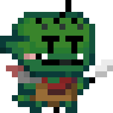
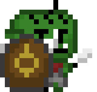
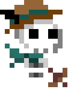
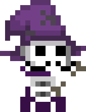
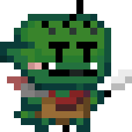
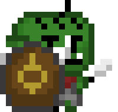
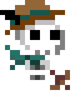
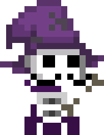
Gunsnake is a dungeon crawler with the movements of the game snake.
For me, this game was the first game I had ever worked on. First I started out as an artist for the game. This led me to create and animate the enemies within the game. As a part of the art team, I would join the weekly team meetings to give updates on my work as well as sign up for the next character that needed to be added into the game. Overall, I created 5 seperate enemies for the game.
After I had created a large number of enemies in the game, I also created their algorithms to attack the player. For this, I used a greedy algorithm that tries to maximize damage done. The way it works is if the player is not within the enemy's attack range, then the enemy moves towards the player by finding the closest tile (found with math). If the player is in the attack range, then the enemy will attack.
I had a great time working on this game with the team!
(Enlarged)
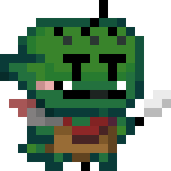
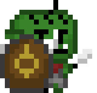
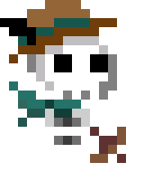
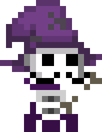